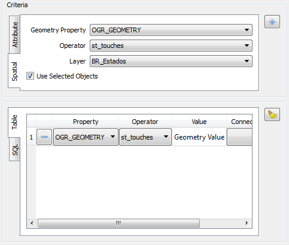

- Property: Attribute to be restricted.
- Operator: List of operators supported for the type of selected data.
- Value
- Property: Uses another attribute of the dataset to build the restriction.
- Value: Uses a specific value to create the restriction.

The result for this restrictions is
shown in below figure.

For spatial restrictions, the fields to
be defined are:

- Geometry Attribute: Attribute with the geometric representation of the selected data set.
- Operator: List of operators supported for the type of selected data.
- Layer: Layer to be confronted with the restriction defined.
- Use Selected Objects: Option used if the user wants to use the selected dataset geometries to build the restriction.
For this example the
user creates a spatial restriction and use the selected dataset
geometries.